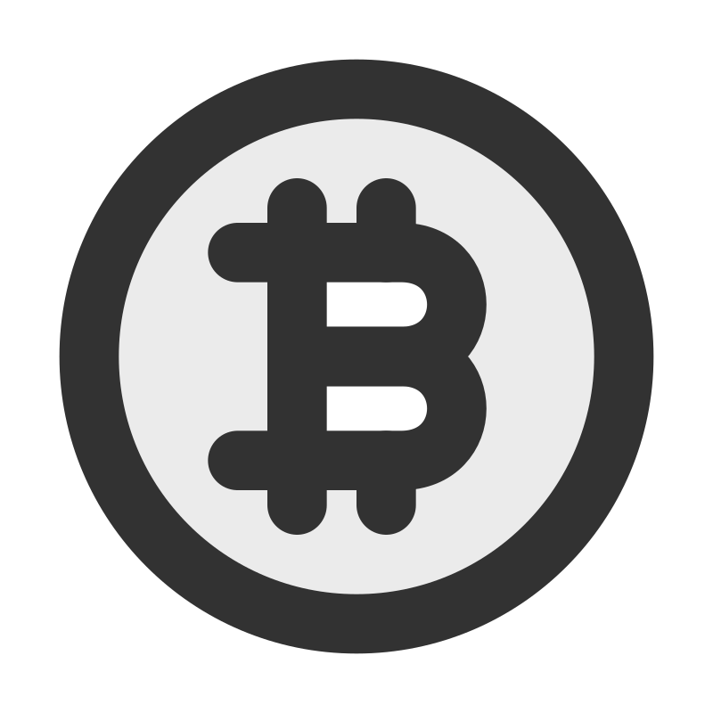
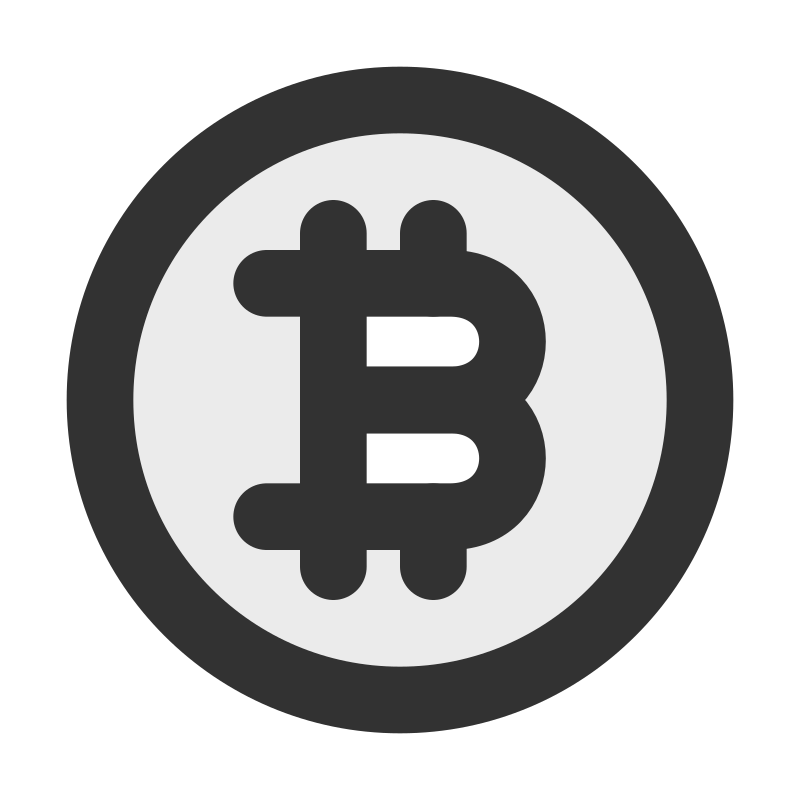

Adding Value to Your Business
Hi, I'm Grzegorz, possibly your future Junior Information Systems Manager or Software Developer - a person who is strongly interested in and aspiring to become an expert (maybe someday) in Information Management Systems. My educational journey has spanned five universities across four countries: the Czech Republic, Poland, Germany, and England, with a primary focus on English-medium studies. This international exposure has significantly broadened my horizons.
Such diverse experiences have granted me a global perspective in my field, enabling me to contribute effectively to various projects that have significantly enhanced the operations of private organizations.
Driven by my passion, I continuously expand my knowledge, delving into cutting-edge technologies in programming and management. This passion has led me to take an interest in MIS, where I have gained valuable experience in web development, C++, and now Rust. I frequently use various Linux CLI/TUI tools, and I have developed skills in statistics and analysis using Excel with VBA, MetaBase, and Grafana. Additionally, I have learned about internal economy management with BPM tools and have acquired basic blockchain knowledge. Consequently, all of this has led me to explore the philosophy of decentralized systems in private organizations, which I strive to better understand in my free time.
Thus, although I recently completed my studies, I am not yet an expert and am still working to improve my skills. With each project, my expertise grows, empowering me to provide innovative and customized solutions. Let's explore how my skills can help achieve your business objectives!
My Programming Projects
Here's a showcase of my selected projects that span different chapters of my life. Each tile is a window into a story of challenges, learning, and growth. Click to delve into the details, view source code, or browse through screenshots. Discover the journey behind each creation.


 



About Me
I am a passionate with a deep interest in Information Management Systems and my favourite Rust programming language. My journey began with the realization that in our universe, information is paramount. This understanding has driven me to explore and innovate in this field, constantly seeking out new knowledge and perspectives.
Soft Skills
- Integrated Consulting Skills: A blend of critical thinking, adaptability, and problem-solving abilities from studying consulting methodologies.
- Strategic Business Acumen: Skilled in optimizing business processes and life cycles, coupled with demonstrated expertise in strategic planning and project management.
- Research and Analysis: Proficient in sourcing and dissecting academic papers, building a solid foundation of knowledge.
- EU and GB Quality Standards Expertise: In-depth knowledge and engagement with European and British standards (CEN, CENELEC, ETSI, NICC).
Key Competencies
- Management Information Systems Passion: Focused on Business Process Management (BPM) and Information Philosophy Theory.
- Unix Philosophy Advocate: Proficient in Linux and FOSS, adhering to the KISS principle.
- Rust Programming: I wrote programs in many languages, but proficient in my fav Rust lang, embracing the Unix philosophy of building software through independent, well-crafted modules.
- AI and Blockchain Proficiency: Skilled in tools and methodologies of AI and blockchain, aiming to drive business innovation and strategy.
Interests and Aspirations
My interests lie at the intersection of management and computer science. Reading scientific papers and exploring the latest trends in Information Management Systems keeps me informed and inspired. As I continue to grow, my goal is to contribute meaningful innovations in the management of information that can transform how we interact with the world around us.